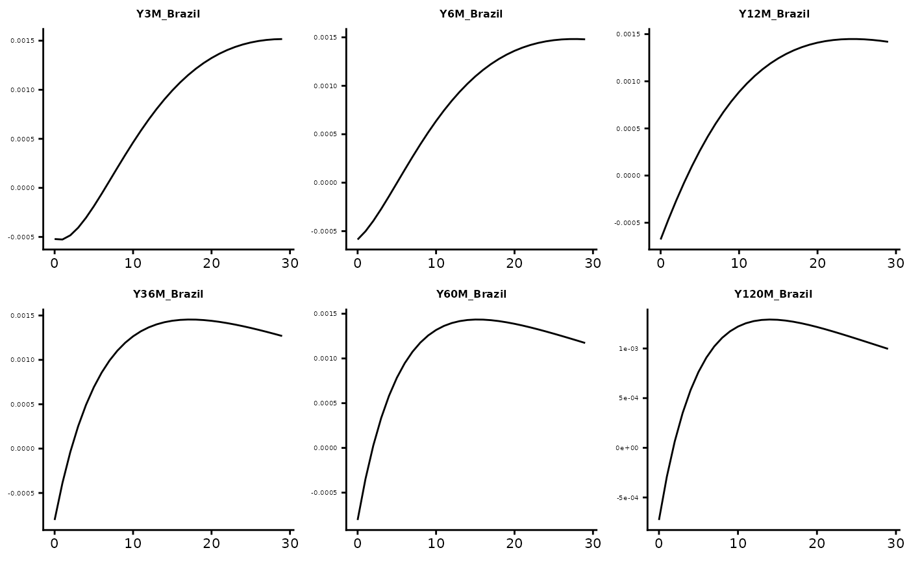
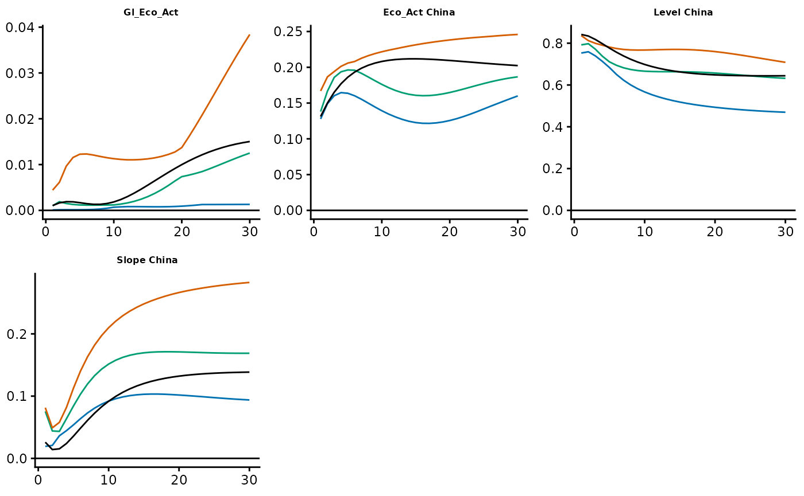

MultiATSM package - General Guidelines
Rubens Moura
2025-10-15
Source:vignettes/MultiATSM.Rmd
MultiATSM.RmdThis document aims at providing general guidance on the use of the MultiATSM package available at the CRAN repository.
The MultiATSM package offers estimation routines and various outputs for single and multi-country affine term structure models (ATSMs). All the frameworks of this package are based on the unspanned economic risk framework from Joslin, Priebsch, and Singleton (2014) (JPS, 2014). In essence, these models assume the absence of arbitrage opportunities, consider a linear state space representation of the yield curve dynamics and offer a tractable approach to simultaneously combine the traditional yield curve factors (spanned factors) along with macroeconomic variables (unspanned factors).
The MultiATSM package currently supports the generation of outputs for eight distinct classes of ATSMs. Specifically, the package accommodates models estimated either on a country-by-country basis, following the approach of JPS (2014), or jointly across all countries within the economic system, as developed in JLL (2015) by Jotikasthira, Le, and Lundblad (2015) and CM (2024) by Candelon and Moura (2024).
Due to peculiar features of JPS-based specifications (see Joslin, Singleton, and Zhu (2011)), an efficient estimation of the parameters governing the risk-neutral (-measure) and the physical (-measure) probability measures can be carried out rather independently. The only exception is the variance-covariance matrix (sigma) term which is a common element to both the and the density functions. In all cases, the risk factor dynamics under the -measure follow a VAR(1) model of some sort. The table below summarizes the general features of each one of the models available at this package.
|
P-dynamics
|
Q-dynamics
|
Sigma matrix estimation
|
Dominant Country
|
||||||||||||||
|---|---|---|---|---|---|---|---|---|---|---|---|---|---|---|---|---|---|
|
Individual
|
Joint
|
Individual
|
Joint
|
P only
|
P and Q
|
||||||||||||
|
Unrestricted
|
Restricted
|
Unrestricted
|
Restricted
|
||||||||||||||
| JLL | GVAR | ||||||||||||||||
| Unrestricted VAR | |||||||||||||||||
| JPS original | x | x | x | ||||||||||||||
| JPS global | x | x | x | ||||||||||||||
| JPS multi | x | x | x | ||||||||||||||
| Restricted VAR (GVAR) | |||||||||||||||||
| GVAR single | x | x | x | ||||||||||||||
| GVAR multi | x | x | x | ||||||||||||||
| Restricted VAR (JLL) | |||||||||||||||||
| JLL original | x | x | x | x | |||||||||||||
| JLL No DomUnit | x | x | x | ||||||||||||||
| JLL joint Sigma | x | x | x | x | |||||||||||||
Some aspects of the multi-country frameworks are worth highlighting. As for the models based on the setup of JLL (2015), the version “JLL original” follows closely the seminal work of JLL (2015), i.e., it is assumed an economic cohort containing a worldwide dominant economy and a set of smaller countries, in addition to the estimation of the sigma matrix be performed exclusively under the -measure. The two other alternative versions assume the absence of a dominant country (“JLL No DomUnit”) and the estimation of sigma under both the and measures (”JLL joint Sigma”), as in the standard single-country JPS (2014) model. As for the remaining multi-country ATSMs, it is considered that the dynamics of the risk factors under the -measure evolves according to a GVAR model. The version labeled “GVAR multi” is the one presented in CM (2024).
In what follows, the focus will be devoted to describe the various pieces that are necessary to implement ATSMs. Specifically, Section Data describes the data-set available at this package and the set of functions that are useful to retrieve data from Excel files. Section Required user inputs exposes the necessary inputs that have to be specified by the user. In Section Model Estimation the estimation procedure is detailed. Section Model Estimation shows how to use the MultiATSM package to estimate ATSMs from scratch.
Data
Package data-set
The MultiATSM package includes modified datasets compared to
those originally used in Candelon and Moura
(2023) (CM, 2023) and Candelon and Moura
(2024) (CM, 2024) due to limited availability of certain data
sources. As such, in some cases, simulated data replicating the original
methodology is employed. To simplify the exposition, the database of CM
(2024) is used throughout the following sections to demonstrate the
package’s functions. These datasets can be accessed using the
LoadData() function with the argument CM_2024, and
similarly, the CM (2023) data with CM_2023.
LoadData("CM_2024")The previous function loads three types of datasets. The first
dataset consists of time series for zero-coupon bond yields from four
emerging markets: China, Brazil, Mexico, and Uruguay. For the purpose of
the ATSM estimation, it is important to note two requirements:
(i) the bond yield maturities must be consistent across all
countries (although the DataForEstimation() and
InputsForOpt() functions can take different maturities as
inputs, it outputs bond yields with uniform maturities for all
economies); and (ii) the bond yields should be expressed in
percentage terms per annum, not in basis points. The MultiATSM
package does not include routines for bootstrapping zero-coupon yields
from coupon bonds, so users must handle this data manipulation
themselves if needed. The data can also be retrieved using:
data("Yields")Bond yield data are also used to construct the country-specific spanned factors, according to the terminology of JPS (2014). These factors typically correspond to the standard yield curve components, namely level, slope, and curvature. An intuitive explanation of their statistical properties is provided in Section Spanned Factors.
The second dataset contains time series for macroeconomic risk factors — also referred to as unspanned factors, following the classification of JPS (2014). These include measures of economic growth and inflation for (i) each of the four countries in the sample and (ii) the global economy. Similar to the bond yield data, these economic indicators must be constructed by the user.
The final dataset captures cross-country interconnectedness measures, proxied by bilateral trade flows, and is essential for estimating GVAR-based models. Specifically, the trade data—sourced from the International Monetary Fund (IMF) — reports the annual value of total goods traded (imports plus exports) between each pair of countries in the sample, available from 1948 onward. All the values are free on board and are expressed in U.S. dollars. These data are specifically used to construct the transition matrix of the GVAR models.
data("TradeFlows")Import data from Excel files
This package also offers an automatized procedure to extract data from Excel files and to, subsequentially, prepare the risk factor databases that are directly used in the model estimation. The use of the package functions requires that the databases (i) are constructed in separate Excel files for the unspanned factors, the term structure data, and the measures of interdependence (for the GVAR-based models); (ii) contain, in each Excel file, one separate tab per country (in addition to the global variables, in the case of the unspanned factors’ database); and (iii) have identical variable labels across all the tabs within each file. For illustration, see the Excel file available at the package. The workflow is as follows:
- Retrieve the full dataset from excel files using
Load_Excel_Data():
MacroData <- Load_Excel_Data(system.file("extdata", "MacroData.xlsx", package = "MultiATSM"))
YieldData <- Load_Excel_Data(system.file("extdata", "YieldsData.xlsx", package = "MultiATSM"))- Specify a subset of the selected inputs. For instance,
Initial_Date <- "2006-09-01" # Format "yyyy-mm-dd"
Final_Date <- "2019-01-01" # Format "yyyy-mm-dd"
DataFrequency <- "Monthly"
GlobalVar <- c("GBC", "VIX") # Global Variables
DomVar <- c("Eco_Act", "Inflation", "Com_Prices", "Exc_Rates") # Domestic variables
N <- 3 # Number of spanned factors per country
Economies <- c("China", "Mexico", "Uruguay", "Brazil", "Russia")
ModelType <- "JPS original"- Conditional on the previous step, the variable RiskFac_TS can be constructed. This variable contains the full time series of risk factors required for the model.
FactorLabels <- LabFac(N, DomVar, GlobalVar, Economies, ModelType)
RiskFac_TS <- DataForEstimation(
Initial_Date, Final_Date, Economies, N, FactorLabels, ModelType,
DataFrequency, MacroData, YieldData
)Required user inputs
Fundamental inputs required for estimation
In order to estimate any ATSM of this package, the user needs to specify several general inputs, namely:
1. Desired ATSM class
- Model type: a character vector indicating the model type to be estimated, as presented in Table 0.1.
2. Risk factor set
Economies: a character vector containing the names of the economies included in the system;
Global variables: a character vector containing the labels of the desired global unspanned factors used in the model estimation;
Domestic variables: a character vector containing the labels of the desired domestic unspanned factors used in the model estimation;
Number of spanned factors (N): a scalar that represents the number of country-specific spanned factors. Note that N is equal across countries.
3. Sample span
Initial sample date: Start date of the sample period in the format “dd-mm-yyyy”;
End sample date: End date of the sample period in the format “dd-mm-yyyy”.
4. Frequency of the data:
- a character vector that specifies the frequency of the time series data. The available options are: “Annually”, “Quarterly”, “Monthly”, “Weekly”, “Daily Business Days”, and “Daily All Days”.
5. Stationary constraint under the -dynamics:
- A logical variable. Choose TRUE to impose the constraint that the largest eigenvalue under the -measure is strictly less than otherwise, it should be set to FALSE. While enforcing this stationary constraint may prolong model estimation, it can improve the convergence of the model.
6. Selected folder to save outputs
- Path where the selected graphical outputs will be saved. If set to
NULL, the outputs are stored in the user’s temporary directory (accessible viatempdir()).
7. Output label
- Character vector of length one, specifying the name used in the file that stores the model outputs.
One possible example of the basic model inputs is
# 1) Model type
ModelType <- "JPS original"
# 2) Risk factor set
Economies <- c("China", "Brazil", "Mexico", "Uruguay")
GlobalVar <- c("GBC", "CPI_OECD") # Global variables
DomVar <- c("Eco_Act", "Inflation") # Domestic variables
N <- 3 # number of spanned factors per country
# 3) Sample span
Initial_Date <- "01-05-2005" # Format: "dd-mm-yyyy"
Final_Date <- "01-12-2019" # Format: "dd-mm-yyyy"
# 4) Frequency of the data
DataFrequency <- "Monthly"
# 5) Risk-neutral stationary constraint
StationarityUnderQ <- FALSE
# 6) Path to save outputs
Folder2Save <- NULL
# 7) Output label
OutputLabel <- "Model_demo"Model-specific inputs required for estimation
GVARlist and JLLlist
Additional inputs are required for estimating GVAR-ATSM or JLL-ATSM models. These inputs should be organized into separate lists, named GVARlist and JLLlist for clarity. This section outlines the general structure of both lists, while Sections GVAR and JLL provide detailed explanations and available options.
For GVAR models, the nature of the inputs is twofold. First, the dynamic structure of each country’s VARX model must be specified. For example:
VARXtype <- "unconstrained"Second, the estimation of the GVAR requires specifying the necessary
inputs to build the transition matrix() . An example of
this list of inputs is
W_type <- "Sample Mean" # Method to compute the transition matrix
t_First_Wgvar <- "2000" # First year of the sample
t_Last_Wgvar <- "2015" # Last year of the sample
DataConnectedness <- TradeFlows # Measure of connectedness across countriesTherefore, a complete GVARlist is
GVARlist <- list(
VARXtype = "unconstrained", W_type = "Sample Mean", t_First_Wgvar = "2000",
t_Last_Wgvar = "2015", DataConnectedness = TradeFlows
)Regarding the JLL-ATSM frameworks, it is sufficient to specify the name of the dominant economy (if applicable) within the economic system:
JLLlist <- list(DomUnit = "China")BRWlist
In an influential paper, Bauer, Rudebusch, and Wu (2012) (BRW, 2012) have shown that the estimates from traditional ATSMs can be severely biased due to the typical small-sample size used in these studies. As result, such models may produce unreasonably stable expected future short-term interest, therefore distorting the term premia estimates for long-maturity bonds. To circumvent this problem, they propose a bootstrap-based method that relies on indirect inference estimation that corrects for the bias present in previous works.
From its version , the MultiATSM package accommodates the framework proposed by BRW (2012) to each one of its ATSM types. Some additional inputs must be specified, if the user intends to perform the model estimation along the lines of BRW (2012). They are:
Mean or median of P-dynamics estimates (Cent_Measure): the user must decide whether to compute the mean or median of the physical dynamics estimates after each bootstrap iteration. To compute the mean (median), the user must set Mean (Median);
Adjustment parameter (gamma): this parameter controls the degree of shrinkage between the difference in the OLS estimates and the BRW (2012)’s bootstrap-based one after each iteration. The value of this parameter is fixed and must lie in the interval ;
Number of iteration (N_iter) : total amount of iterations used in the stochastic approximation algorithm after burn-in;
Number of bootstrap samples (B): quantity of simulated samples used in each burn-in or actual iteration;
Perform closeness check (checkBRW): flag whether the user wishes to check the root mean square distance between the model estimates produced by the bias-correction method and those generated by OLS. Default is set to TRUE;
Number of bootstrap samples used in the closeness check (B_check): default is set to 100,000;
Number of burn-in iteration (N_burn): quantity of the iterations to be discarded in the first stage of the bias-correction estimation process. The recommended number is of the total number of iterations.
Eigenvalue restriction (Eigen_rest): set a restriction on the largest eigenvalue under the -measure. Default is .
The InputsForOpt() function
The InputsForOpt() function plays a crucial role in the
functioning of the MultiATSM package. Specifically, it gathers,
transforms, and generates the necessary inputs for building the
likelihood function based on the user-provided inputs described in the
previous sections, which are then directly utilized in the model
optimization process. One possible use of InputsForOpt()
is:
LoadData("CM_2024")
ModelType <- "JPS original"
Economies <- "Mexico"
t0 <- "01-05-2007" # Initial Sample Date (Format: "dd-mm-yyyy")
tF <- "01-12-2018" # Final Sample Date (Format: "dd-mm-yyyy")
N <- 3
GlobalVar <- c("Gl_Eco_Act") # Global Variables
DomVar <- c("Eco_Act") # Domestic Variables
FactorLabels <- LabFac(N, DomVar, GlobalVar, Economies, ModelType)
DataFreq <- "Monthly"
ATSMInputs <- InputsForOpt(t0, tF, ModelType, Yields, GlobalMacro, DomMacro,
FactorLabels, Economies, DataFreq,
CheckInputs = FALSE
)Additional inputs for numerical and graphical outputs
Once the model parameters from the ATSM have been estimated, the
NumOutputs() function enables the compilation of numerical
and graphical of the following additional outputs:
Model fit of the bond yields;
Impulse response functions (IRFs);
Forecast error variance decompositions (FEVDs);
Generalized impulse response functions (GIRFs);
Generalized forecast error variance decompositions (GFEVDs);
Bond yields decomposition into their expected component and term premia.
For the numerical computation of the IRFs, GIRFs, FEVDs or GFEVDs, a horizon of analysis has to be specified, e.g.:
Horiz <- 100For the graphical outputs, the user must indicate the desired types of graphs in a string-based vector:
DesiredGraphs <- c("Fit", "GIRF", "GFEVD") # Available options are: "Fit", "IRF", "FEVD", "GIRF",
# "GFEVD", "TermPremia".Moreover, the user must select the types of variables of interest (yields, risk factors or both) and, for the JLL type of models, whether the orthogonalized version should be additionally included
WishGraphRiskFac <- FALSE
WishGraphYields <- TRUE
WishOrthoJLLgraphs <- FALSE The function InputsForOutputs() can provide some
guidance for customizing the features of the wished outputs. Conditional
to these settings, individual folders are created at the selected
Folder2Save to store the different types of the desired
graphical outputs. The selected outputs are also printed to the user’
console.
Bond yield decomposition
In its current form, the MultiATSM package allows for the calculation of two risk compensation measures: term premia and forward premia. In particular, a -maturity bond yield can be decomposed as the sum of its expected short-rate () and term premia () components. Technically: In the package’s standard form, the expected short rate term is computed from time to , which represents the bond’s maturity: . Alternatively, one could perfom such a decomposition at the forward rate level (), specifically where corresponds to the forward premia. In this case, the user must specify a logical variable set to TRUE if the computation of forward premia is desired, or FALSE otherwise. If set to TRUE, the user must also provide a two-element numerical vector containing the maturities corresponding to the starting and ending dates of the bond maturity. Example:
WishFPremia <- TRUE
FPmatLim <- c(60, 120)Bootstrap settings
An additional list of inputs is required if the user intends to generate confidence bands around the point estimates of the numerical outputs. These results are achieved using a bootstrap procedure. Specifically, the list of inputs include:
- The desired bootstrap procedure (methodBS): Available options are (i) standard residual bootstrap (bs); (ii) wild bootstrap (wild), and block bootstrap (block). If the latest is selected, then the block length (BlockLength) must be indicated;
- The number of bootstrap draws (ndraws);
- The confidence level expressed in percentage points (pctg).
Bootlist <- list(methodBS = "block", BlockLength = 4, ndraws = 50, pctg = 95)Out-of-sample forecast settings
To perform out-of-sample forecasts of bond yields, the following list-based features have to be detailed:
- Number of periods-ahead that the forecasts are to be generated (ForHoriz);
- Time-dimension index of the first observations belonging to the information set (t0Sample);
- Time-dimension index of the last observation of the information set used to perform the first forecast set (t0Forecast);
- Method used in the forecast computation (ForType): forecasts can be generated using rolling or expanding windows. Rolling window forecasting to be done by setting this parameter as Rolling. In such a case, the forecast length used in the forecasts is the one specified as in t0Sample. Should the user wishes the forecasts to be performed on a expanding window basis, then this input should be set as Expanding.
ForecastList <- list(ForHoriz = 12, t0Sample = 1, t0Forecast = 70, ForType = "Rolling")Model Estimation
Once bond yields and other (macro)economic time series data are gathered and model features are selected, ATSM estimation proceeds in three steps. First, the package estimates the country-specific spanned factors for inclusion in the global ATSM. Next, it estimates the parameters governing risk factor dynamics under the measure. Finally, it optimizes the entire selected ATSM, including the measure parameters.
Spanned Factors
The spanned factors are yield-related variables that are used to fit the cross-section dimensions of the term structures. Typically, the spanned factors of country , , are computed as the N first principal components (PCs) of the set of observed bond yields. Formally, is constructed as where is the PC weight matrix and is a country-specific column-vector of yields with increasing maturities.
For , the spanned factors are traditionally interpreted as level, slope, and curvature. This interpretation arises from the structure of the principal component (PC) weight matrix, as shown below :
w <- pca_weights_one_country(Yields, Economy = "Uruguay")In matrix w, each row stores the weights used for constructing each spanned factor. The entries of the first row are linked to the composition of the level factor in that they load rather equally on all yields. Accordingly, high (low) values of the level factor indicate an overall high (low) value of yields across all maturities. In the second row, the weights monotonically increase with the maturities and, therefore, they capture the degree of steepness (slope) of the term structure. High slope factor values imply a steep yield curve, whereas low ones entail flat (or, possibly, downward) curves. In the third row, the weights of the curvature factor are presented. The name of this factor follows from the fact that the weights have a more pronounced effect on the middle range maturities of the curve. These concepts are graphically illustrated below.
Yield loadings on the spanned factors
To directly obtain the time series of the country-specific spanned
factors, the user can use the Spanned_Factors() function as
follows:
data("Yields")
Economies <- c("China", "Brazil", "Mexico", "Uruguay")
N <- 3
SpaFact <- Spanned_Factors(Yields, Economies, N)The P-dynamics estimation
As presented in Table 0.1, the dynamics of the risk factors under the -measure evolve according to a VAR(1) model, which may be fully unrestricted (as in the case of the JPS-related models) or partially restricted (as in the GVAR and JLL frameworks). While the focus here is their integration into an ATSM setup, each specification can also be estimated independently to study dynamic systems. The usage of these models is illustrated below.
VAR
Using the VAR() function of this package requires simply
selecting the set of risk factors for the desired estimated model. For
instance, for the models JPS global and JPS multi, the
estimation of the
-dynamics
parameters is obtained as
whereas the estimation of a JPS original model for China is
FactorsChina <- RiskFacFull[1:7, ]
PdynPara <- VAR(FactorsChina, VARtype = "unconstrained")In both cases, the outputs generated are the vector of intercepts and both the feedback and variance-covariance matrices of an unconstrained VAR model.
GVAR
The GVAR() function is designed to estimate a
first-order GVAR which is built from country-specific VARX(1,1,1)
models. For a comprehensive discussion of GVAR models, see, for
instance, Chudik and Pesaran (2016).
The GVAR() function requires two key inputs: the number
of country-specific spanned factors (N) and a set of supplementary
inputs stored in the GVARinputs list. The former is composed by
four elements:
Economies: A character vector containing the names of the economies included in the system;
GVAR list of risk factors: a list of risk factors sorted by country in addition to the global variables. See the outputs of the
DatabasePrep()function;VARX type: a string-vector containing the desired estimated form of the VARX(1,1,1). Three possibilities are available. The “unconstrained” form estimates the model without any constrains, using standard OLS regressions for each model equation. The “constrained: Spanned Factors” form prevents foreign-spanned-factors to impact any domestic factor in the feedback matrix, whereas “constrained: ’ followed by the name of the risk factor restricts this same factor to be influenced only by its own lagged values and the lagged values of its own star variables. In the last two cases, the VARX(1,1,1) is estimated by restricted least squares.
data(GVARFactors)
GVARinputs <- list(Economies = Economies, GVARFactors = GVARFactors, VARXtype = "constrained: Inflation")- Transition matrix: The estimation of a GVAR model requires defining a measure of interdependence among the countries of the economic system. This information is reported in the transition matrix, the entries of which reflect the degree of interconnection across two entities of this same economic system. The GVAR setups can be estimated using fixed or, starting from package’s version , time-varying interdependence weights.
Time-varying interdependence implies that the star factors are constructed by applying trade flow weights from the specific year to adjust the risk factors of the corresponding year. To employ this feature, users need to specify the transition matrix type as Time-varying and select the same specific date (year) for both the initial and final years within the transition matrix. This implies that the trade weights of this year are used for solving (link matrices) the GVAR system.
Below the illustration of the transition matrix is computed as the average of the cross-border trade flow weights for the period spanning the years from 2006 to 2019. Therefore, the degree of dependence across countries is assumed to be fixed over the entire sample span. Note that each row sums up to .
data("TradeFlows")
t_First <- "2006"
t_Last <- "2019"
Economies <- c("China", "Brazil", "Mexico", "Uruguay")
type <- "Sample Mean"
W_gvar <- Transition_Matrix(t_First, t_Last, Economies, type, TradeFlows)
print(W_gvar)## China Brazil Mexico Uruguay
## China 0.0000000 0.6549066 0.31550095 0.029592464
## Brazil 0.8268799 0.0000000 0.12340661 0.049713473
## Mexico 0.8596078 0.1326284 0.00000000 0.007763753
## Uruguay 0.3811195 0.5497525 0.06912795 0.000000000Having defined the form of the transition matrix, one can complete the GVARinputs list to estimate a GVAR(1) model. Note that the CheckInputs parameter is set as TRUE to perform a prior consistency check on the inputs provided in GVARinputs.
JLL
Calculating the -dynamics parameters in the form proposed by JLL (2015) requires the following inputs: (i) the time series of the risk factors in non-orthogonalized form; (ii) the number of country-specific spanned factors and (iii) the specification of the JLLinputs list, which includes the following elements:
Economies: A character vector containing the names of the economies included in the system;
Dominant Country: a string-vector containing the name of the economy which is assigned as the dominant country (applicable for the JLL original and JLL joint Sigma models) or None (applicable for the JLL No DomUnit);
Wish the estimation of the sigmas matrices: this is a logical variable which assumes value equal to TRUE if the user wishes the estimation of all JLL sigma matrices (i.e. variance-covariance and the Cholesky factorization matrices) and, FALSE otherwise. Since this estimation is done numerically, its estimation can take several minutes;
Sigma of the non-orthogonalized variance-covariance matrix: to save time, the user may provide the variance-covariance matrix from the non-orthogonalized dynamics. Otherwise, this input should be set as NULL.
JLL type: a string-vector containing the label of the JLL model to be estimated according to the features described in Table 0.1.
One possible list of JLLinputs is as follows:
ModelType <- "JLL original"
JLLinputs <- list(
Economies = Economies, DomUnit = "China", WishSigmas = TRUE, SigmaNonOrtho = NULL,
JLLModelType = ModelType
)As such, the dynamics dimension of a JLL-based setup can be computed as:
ATSM estimation
ATSM estimation involves optimizing the log-likelihood function by
optimally selecting the model parameters via the
Optimization() function. Broadly, the unspanned risk
framework from JPS (2014) (and, therefore, all its multi-country
extensions) follows a model parameterization similar to that proposed by
Joslin, Singleton, and Zhu (2011).
Specifically, it requires the estimation parameter set consisting of 6
elements, namely the:
Risk-neutral long-run mean of the short rate (r0);
Risk-neutral feedback matrix (K1XQ);
Variance-covariance matrix (SSZ) from the VAR processes;
The standard deviation of the errors from the portfolios of yields observed with error (se);
Intercept of the physical dynamics (K0Z);
Feedback matrices of the physical dynamics (K1Z).
The parameters K0Z and K1Z are estimated as part of the model’s dynamics and are known in closed form. Likewise, r0 and se have analytical solutions and can be factored out of the log-likelihood function. However, the remaining parameters (K1XQ and SSZ) require numerical estimation. This package provides standardized routines to set effective initial values, facilitating the optimization process.
The MultiATSM package offers two optimization algorithms: L-BFGS-B and Nelder-Mead. By default, both algorithms are run sequentially twice to ensure the model reaches the global optimum. Specifically in the default bootstrap setup, only Nelder-Mead is used to save time.
Examples of full implementation of ATSMs
This section presents some examples on how to use the MultiATSM package to fully implement ATSMs. The console displays messages to help the user track the progress of the code execution at each step. Further on, the functions of this package are used to replicate some of the results presented in the original papers of JPS (2014), CM (2023) and CM (2024). See the Paper Replication Vignette of this package for a detailed reproduction.
General template
########################################################################################################
#################################### USER INPUTS #######################################################
########################################################################################################
library(MultiATSM)
# A) Load database data
LoadData("CM_2024")
# B) GENERAL model inputs
ModelType <- "JPS original" # available options: "JPS original", "JPS global", "GVAR single", "JPS multi",
# "GVAR multi", "JLL original", "JLL No DomUnit", "JLL joint Sigma".
Economies <- c("China", "Brazil") # Names of the economies from the economic system
GlobalVar <- c("Gl_Eco_Act") # Global Variables
DomVar <- c("Eco_Act") # Country-specific variables
N <- 2 # Number of spanned factors per country
t0_sample <- "01-12-2007" # Format: "dd-mm-yyyy"
tF_sample <- "01-12-2019" # Format: "dd-mm-yyyy"
OutputLabel <- "Test" # label of the model for saving the file
DataFreq <- "Monthly" # Frequency of the data
Folder2Save <- NULL # Folder to save the required graphical outputs. NULL -> temporary directory
StatQ <- FALSE # Wish to impose stationary condition for the eigenvalues of each country
# B.1) SPECIFIC model inputs
#################################### GVAR-based models ##################################################
GVARlist <- list(
VARXtype = "unconstrained", W_type = "Sample Mean", t_First_Wgvar = "2005",
t_Last_Wgvar = "2019", DataConnectedness = TradeFlows
)
# VARXtype: Available options "unconstrained" or "constrained" (VARX)
# W_type: Method to compute the transition matrix. Options:"Time-varying" or "Sample Mean"
# t_First_Wgvar: First year of the sample (transition matrix)
# t_Last_Wgvar: Last year of the sample (transition matrix)
# DataConnectedness: measure of connectedness across countries
#################################### JLL-based models ###################################################
JLLlist <- list(DomUnit = "China")
# DomUnit: name of the economy of the economic system, or "None" for the model "JLL No DomUnit"
###################################### BRW inputs ######################################################
WishBC <- FALSE # Wish to estimate the model with the bias correction method of BRW (2012)
BRWlist <- within(list(
Cent_Measure = "Mean", gamma = 0.05, N_iter = 250, B = 50, checkBRW = TRUE,
B_check = 1000, Eigen_rest = 1
), N_burn <- round(N_iter * 0.15))
# Cent_Measure: "Mean" = compute the mean; "Median" = compute the median
# gamma: Adjustment parameter
# N_iter: Number of iteration to be conserved
# N_burn: Number of iteration to be discarded
# B: Number of bootstrap samples
# checkBRW: wishes to perform closeness check: TRUE or FALSE
# B_check: If checkBRW is chosen as TRUE, then choose number of bootstrap samples used in the check
# C) Decide on Settings for numerical outputs
WishFPremia <- TRUE # Wish to estimate the forward premia
FPmatLim <- c(60, 120) # If the forward premia is desired, then choose the Min and max maturities of the
# forward premia. Otherwise set NA
Horiz <- 30
DesiredGraphs <- c("Fit", "IRF", "TermPremia") # "Fit", "IRF", "FEVD", "GIRF", "GFEVD", "TermPremia"
WishGraphRiskFac <- FALSE
WishGraphYields <- TRUE
WishOrthoJLLgraphs <- FALSE
# D) Bootstrap settings
WishBootstrap <- TRUE
BootList <- list(methodBS = "bs", BlockLength = 4, ndraws = 4, pctg = 95)
# methodBS: bootstrap method. Available options: (i) 'bs' ; (ii) 'wild'; (iii) 'block'
# BlockLength: Block length, necessary input for the block bootstrap method
# ndraws: number of bootstrap draws
# pctg: confidence level
# E) Out-of-sample forecast
WishForecast <- TRUE
ForecastList <- list(ForHoriz = 12, t0Sample = 1, t0Forecast = 131, ForType = "Rolling")
# ForHoriz: forecast horizon
# t0Sample: initial sample date
# t0Forecast: last sample date for the first forecast
# ForType: Available options are "Rolling" or "Expanding"
#########################################################################################################
## NO NEED TO MAKE CHANGES FROM HERE:
## The sections below automatically process the inputs provided above, run the model
## estimation, generate the numerical and graphical outputs, and save results.
#########################################################################################################
# 2) Minor preliminary work: get the sets of factor labels and a vector of common maturities
FactorLabels <- LabFac(N, DomVar, GlobalVar, Economies, ModelType)
# 3) Prepare the inputs of the likelihood function
ATSMInputs <- InputsForOpt(
t0_sample, tF_sample, ModelType, Yields, GlobalMacro, DomMacro,
FactorLabels, Economies, DataFreq, GVARlist, JLLlist, WishBC, BRWlist
)
# 4) Optimization of the ATSM (Point Estimates)
ModelParaList <- Optimization(ATSMInputs, StatQ, DataFreq, FactorLabels, Economies, ModelType)
# 5) Numerical and graphical outputs
# a) Prepare list of inputs for graphs and numerical outputs
InputsForOutputs <- InputsForOutputs(
ModelType, Horiz, DesiredGraphs, OutputLabel, StatQ, DataFreq,
WishGraphYields, WishGraphRiskFac, WishOrthoJLLgraphs, WishFPremia,
FPmatLim, WishBootstrap, BootList, WishForecast, ForecastList
)
# b) Fit, IRF, FEVD, GIRF, GFEVD, and Term Premia
NumericalOutputs <- NumOutputs(
ModelType, ModelParaList, InputsForOutputs, FactorLabels, Economies,
Folder2Save
)
# c) Confidence intervals (bootstrap analysis)
BootstrapAnalysis <- Bootstrap(
ModelType, ModelParaList, NumericalOutputs, Economies, InputsForOutputs,
FactorLabels, JLLlist, GVARlist, WishBC, BRWlist, Folder2Save
)
# 6) Out-of-sample forecasting
Forecasts <- ForecastYields(
ModelType, ModelParaList, InputsForOutputs, FactorLabels, Economies,
JLLlist, GVARlist, WishBC, BRWlist, Folder2Save
)User-Friendly Inspection of Key Elements in the Selected ATSM Specification
Starting from version , the MultiATSM package provides additional ways to concisely inspect key elements of the selected ATSM. In particular, users can now gain an alternative perspective on the general model inputs, optimized model parameters, graphocal outputs and root mean square error (RMSE) from the forecast analysis. For clarity, the variable names used hereafter align with those presented in Section General template.
ATSM inputs
The ATSMInputs variable is an object of class
ATSMModelInputs that includes the
methods print() and summary(). The
print() method provides an overview of both the model
inputs and the economic system’s general features, while the
summary() method offers statistical summaries of the risk
factors and bond yields.
## General Model Inputs:
## ------------------------------------------
## Model Type: JPS original
## Economic System: China, Brazil
## Sample Span: 01-12-2007 - 01-12-2019
## Data Frequency: Monthly
## Common Maturities across Countries: 0.25 0.5 1 3 5 10 years
## ------------------------------------------
##
## Key Structure of the Economic System:
## ------------------------------------------
## Total amount of spanned factors in the system: 4
## Total amount of global unspanned factors in the system: 1
## Total amount of country-specific unspanned factors in the system: 2
## Total amount of risk factors in the system: 7
## ------------------------------------------
summary(Out_Example$ATSMInputs)## Summary Statistics from the Time Series Components:
## ------------------------------------------------------
## 1) Risk Factors:
##
## Model China
## Mean Std_Dev Min Max
## Gl_Eco_Act -1.127 6.819 -15.964 19.073
## Eco_Act China 9.364 4.275 3.915 23.541
## Level China 7.058 1.557 3.149 10.281
## Slope China 2.654 0.457 1.723 3.884
##
## Model Brazil
## Mean Std_Dev Min Max
## Gl_Eco_Act -1.127 6.819 -15.964 19.073
## Eco_Act Brazil 1.692 3.082 -3.813 10.779
## Level Brazil 26.019 5.956 11.870 38.702
## Slope Brazil 3.576 1.274 0.627 6.409
##
## 2) Bond Yields:
##
## Model China
## Mean Std_Dev Min Max
## Y3M_China 2.615 0.805 0.467 4.003
## Y6M_China 2.671 0.777 0.615 4.209
## Y12M_China 2.774 0.726 0.991 4.394
## Y36M_China 3.133 0.628 1.252 4.510
## Y60M_China 3.384 0.518 1.994 4.469
## Y120M_China 3.752 0.496 2.622 4.848
##
## Model Brazil
## Mean Std_Dev Min Max
## Y3M_Brazil 10.160 2.650 4.66 14.72
## Y6M_Brazil 10.233 2.697 4.49 15.18
## Y12M_Brazil 10.423 2.691 4.46 15.86
## Y36M_Brazil 10.898 2.477 4.84 16.52
## Y60M_Brazil 11.209 2.262 5.32 16.85
## Y120M_Brazil 11.412 2.113 5.72 17.25
## ------------------------------------------------------ATSM parameters
The Optimization() function returns an object of class
‘ATSMModelOutputs’, which includes the summary()
method. This method offers a parsimonious summary of key model outputs
following optimization process, including the maximum log-likelihood
value, the intercept and slope coefficients from the model’s
cross-sectional dimension, and the count of physical-measure eigenvalues
greater than one—an indicator of potential explosive behavior in the
model’s time series dimension.
summary(Out_Example$ModelPara)## Model China
## General Model Outputs:
## ------------------------------------------------------
## 1) Maximum Log-likelihood value: 26.87461
##
## 2) Key Features from the Q-measure:
## a) Long run risk-neutral mean (r0): 0.00443
## b) Risk-neutral eigenvalues: 0.98828 0.98828
##
## c) Intercept matrix of loadings (Matrix A):
## [,1]
## Y3M_China 0.000285
## Y6M_China 0.000163
## Y12M_China -0.000046
## Y36M_China -0.000482
## Y60M_China -0.000451
## Y120M_China 0.000551
##
## d) Slope Matrix of Loadings (Matrix B) :
## Level China Slope China
## Y3M_China 0.005050 -0.003269
## Y6M_China 0.004909 -0.002686
## Y12M_China 0.004645 -0.001598
## Y36M_China 0.003778 0.001879
## Y60M_China 0.003145 0.004296
## Y120M_China 0.002170 0.007596
##
## 3) Key Features from the P-measure:
## - Number of physical-measure eigenvalues greater than one: 0
## ------------------------------------------------------
## Model Brazil
## General Model Outputs:
## ------------------------------------------------------
## 1) Maximum Log-likelihood value: 23.16511
##
## 2) Key Features from the Q-measure:
## a) Long run risk-neutral mean (r0): 0.01471
## b) Risk-neutral eigenvalues: 0.9458 0.9458
##
## c) Intercept matrix of loadings (Matrix A):
## [,1]
## Y3M_Brazil 0.004903
## Y6M_Brazil 0.000585
## Y12M_Brazil -0.004982
## Y36M_Brazil -0.008232
## Y60M_Brazil -0.002715
## Y120M_Brazil 0.012650
##
## d) Slope Matrix of Loadings (Matrix B) :
## Level Brazil Slope Brazil
## Y3M_Brazil 0.004413 -0.005629
## Y6M_Brazil 0.004388 -0.003795
## Y12M_Brazil 0.004334 -0.001108
## Y36M_Brazil 0.004092 0.003337
## Y60M_Brazil 0.003851 0.004447
## Y120M_Brazil 0.003316 0.004703
##
## 3) Key Features from the P-measure:
## - Number of physical-measure eigenvalues greater than one: 0
## ------------------------------------------------------Graphical outputs
The NumOutputs() function returns an object of class
ATSMNumOutputs, which includes an autoplot()
method. This method allows users to inspect the empirical properties of
the chosen specification by displaying graphical outputs in the console,
regardless of whether they were saved to Folder2Save. The user
must specify a plot type: RiskFactors, Fit,
TermPremia, or one of IRF, FEVD,
GIRF, GFEVD (each suffixed with
_Factors or _Yields). For JLL-based models, an
additional _Ortho suffix generates orthogonalized outputs.
The examples below illustrate the responses of the Brazilian and Chinese
yield curves to a global economic activity shock:
GIRF_all <- autoplot(Out_Example$NumOut, type = "GIRF_Yields")## Warning: `aes_string()` was deprecated in ggplot2 3.0.0.
## ℹ Please use tidy evaluation idioms with `aes()`.
## ℹ See also `vignette("ggplot2-in-packages")` for more information.
## ℹ The deprecated feature was likely used in the MultiATSM package.
## Please report the issue at
## <https://github.com/rubensmoura87/MultiATSM/issues>.
## This warning is displayed once every 8 hours.
## Call `lifecycle::last_lifecycle_warnings()` to see where this warning was
## generated.
GIRF_all$Brazil$Gl_Eco_Act
GIRF_all$China$Gl_Eco_ActAdditionally, the autoplot()
method for ATSMModelBoot objects—generated by the
Bootstrap() function—allows users to assess the statistical
significance of the results. The example below shows the responses of
12-month bond yields to several shocks.
GIRF_all_Boot <- autoplot(Out_Example$Bootstrap, Out_Example$NumOut, type = "GIRF_Yields_Boot")
GIRF_all_Boot$China$Y12M_China
GIRF_all_Boot$Brazil$Y12M_BrazilIn this context, the autoplot() method requires two
additional inputs beyond the ATSMModelBoot object. First, it
takes an ATSMNumOutputs object to provide the point estimates
of the selected output. Second, the user must specify the plot type,
which follows the same structure as for ATSMNumOutputs objects,
but with the added _Boot suffix. It is worth noting that,
in this example, the point estimates (black lines) occasionally lie
outside the confidence bands. This is not surprising, as the bootstrap
was carried out with only a few draws (4).
Forecasts
The ForecastYields() function returns an object of class
‘ATSMModelForecast’, which can be visualized using the
plot()
method. This method generates a graphical representation of the RMSEs
across different countries and forecast horizons.
plot(Out_Example$Forecasts)